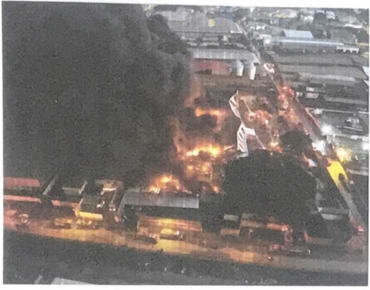
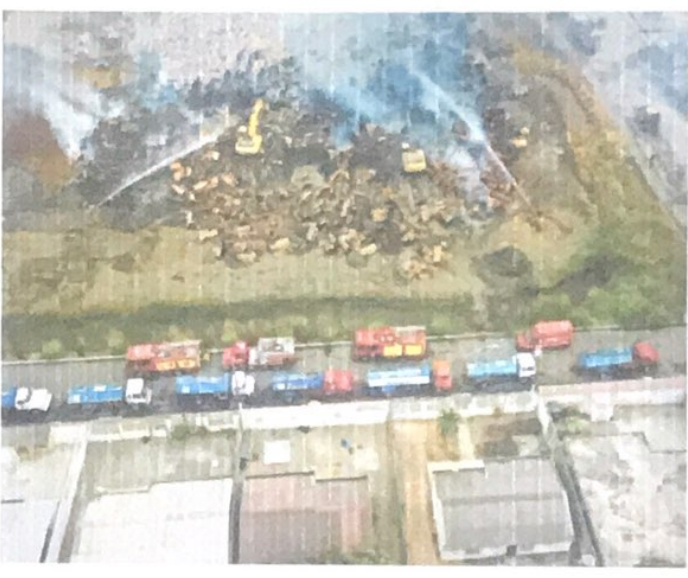
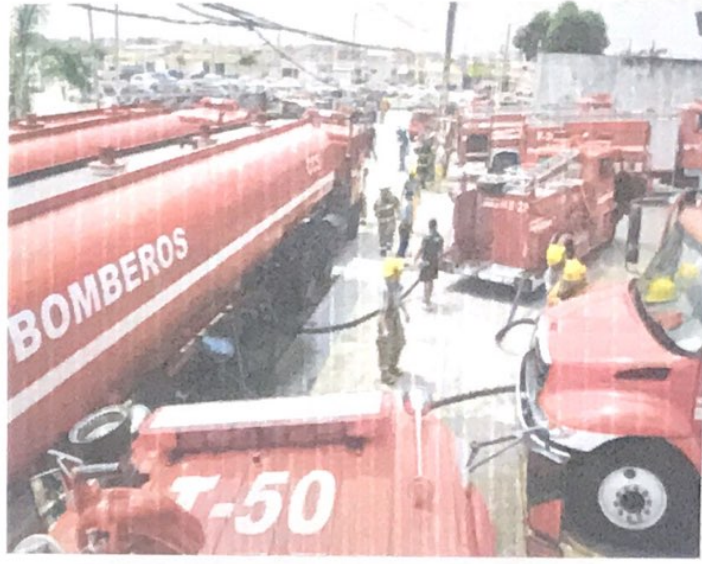

Maniobras de abastecimiento
El capítulo se organiza en tres apartados:
- Fuentes dinámicas de abastecimiento.
- Fuentes estáticas de abastecimiento.
- Maniobras combinadas.
  


Fuentes dinámicas
Abastecimiento simple
La lámina describe un abastecimiento simple con dos autobombas. El primer vehículo de combate tendría mayor capacidad de bomba y el segundo, mayor capacidad de tanque. El objetivo indicado es aumentar el volumen disponible y prolongar el tiempo de respuesta.
El ejemplo gráfico rotula tanques de 2.800 gal y 1.200 gal, y una descarga de 125 GPM.

Bombeo en paralelo
El texto describe el uso de dos o más autobombas conectadas en paralelo para aportar mayor caudal a otra bomba. El esquema representa dos aportes de 250 GPM que llegan a otra autobomba, con una salida rotulada 500 GPM.

Ejemplo de bombeo en paralelo
La ilustración amplía el ejemplo anterior: varias autobombas alimentan una unidad que distribuye agua hacia distintas líneas de ataque. Se conservan los caudales que se alcanzan a leer en el diagrama; no se infiere un procedimiento adicional a partir del dibujo.

Bombeo en serie
El manual describe la conexión en serie de dos o más autobombas mediante mangueras. Indica mantener las revoluciones de trabajo de cada vehículo en ralentí y señala como objetivo generar presión para contrarrestar pérdidas por fricción en recorridos largos o por desnivel.
El esquema incluye anotaciones de presión de 50, 100 y 150 PSI; se transcriben como rótulos de la ilustración.

Camión cisterna
El texto presenta el camión cisterna como un vehículo de gran volumen de agua que, según el manual, no cuenta con bomba propia. Describe su trabajo conjunto con una autobomba, que succionaría el agua del tanque y la dirigiría a las unidades de combate.

Maniobra con camión cisterna y carro escalera
El esquema combina vehículos cisterna y autobombas con un carro escalera que aplica agua desde altura. La ilustración muestra capacidades de tanques y caudales para este ejemplo.

Maniobras de abastecimiento con autobombas
La lámina reúne varias configuraciones de camiones cisterna y autobombas que abastecen líneas de ataque en distintos niveles de una edificación. Es un diagrama de referencia; sus cifras se mantienen dentro de la imagen para no descontextualizarlas.

Fuentes estáticas
Aguas superficiales y subterráneas
El manual señala que el abastecimiento puede obtenerse de aguas superficiales o subterráneas y que no debería limitarse el estudio a la red pública de tuberías.

Abastecimientos alternativos
El texto recomienda considerar otras fuentes cuando el sistema público falle o no cubra la demanda del incendio. Menciona sistemas privados de industrias y fuentes naturales —mar, lagos, estanques y ríos—, además de piscinas y tanques de almacenamiento de granjas.

Hidrantes de cilindro seco y húmedo
El manual presenta los hidrantes como fuente habitual y menciona la alimentación directa de líneas de ataque o de otra autobomba colocada en serie. La figura compara hidrantes de cilindro seco y cilindro húmedo, con partes y válvulas rotuladas.

Alimentación desde hidrante
El texto indica que puede no haber un hidrante cercano, habilitado o con presión suficiente; ante esas limitaciones, menciona maniobras con otra autobomba o tendidos extensos de manguera.

Configuraciones de hidrantes
La lámina representa dos configuraciones de abastecimiento desde hidrantes, con vehículos, líneas y puntos de descarga.

Succión directa
El manual define la succión directa como la alimentación de una bomba desde una fuente estática. Indica que puede emplearse con distintas fuentes si hay agua suficiente y su contaminación no representa peligro para la vida.
La figura compara dos montajes y muestra una dimensión de 60 cm.

Ejemplos de succión directa
Los diagramas muestran la toma desde una fuente de agua y la reposición de vehículos desde distintas configuraciones. Las flechas y rótulos de caudal forman parte de los ejemplos gráficos.

Trasvase de agua
El manual describe el trasvase como el transporte de agua desde una fuente hasta depósitos portátiles, desde los que se succionaría para combatir el fuego. La lámina indica su uso para distancias mayores de 800 m o cuando se excede la capacidad del cuerpo de bomberos para tender líneas de abastecimiento.

Configuraciones de trasvase
La figura presenta dos recorridos de trasvase con punto de llenado, vehículos y depósitos portátiles.

Piscina portátil
El manual describe depósitos portátiles con capacidad de 3.500 gal, colocados cerca del incendio para recibir agua de camiones cisterna o autobombas. Indica que el vaciado puede hacerse por la compuerta del camión o mediante la bomba con un codo como accesorio.

Abastecimiento con piscina portátil
Los esquemas muestran dos configuraciones con piscina portátil: una con líneas de ataque desde autobombas y otra que incorpora un carro escalera.

Maniobras combinadas
Hidrante y piscina portátil
La ilustración combina un hidrante, una piscina portátil y vehículos de abastecimiento y ataque.

Trasvase, hidrante y piscina portátil
La lámina integra el trasvase desde una fuente distante, el uso de hidrante y una piscina portátil dentro de una sola configuración.

Paralelo y piscina portátil
El esquema combina autobombas en paralelo con una piscina portátil y varias líneas de ataque.

Abastecimiento para carros escalera
La página representa el abastecimiento de carros escalera mediante autobombas y camiones cisterna, con aplicación de agua desde la plataforma elevada.